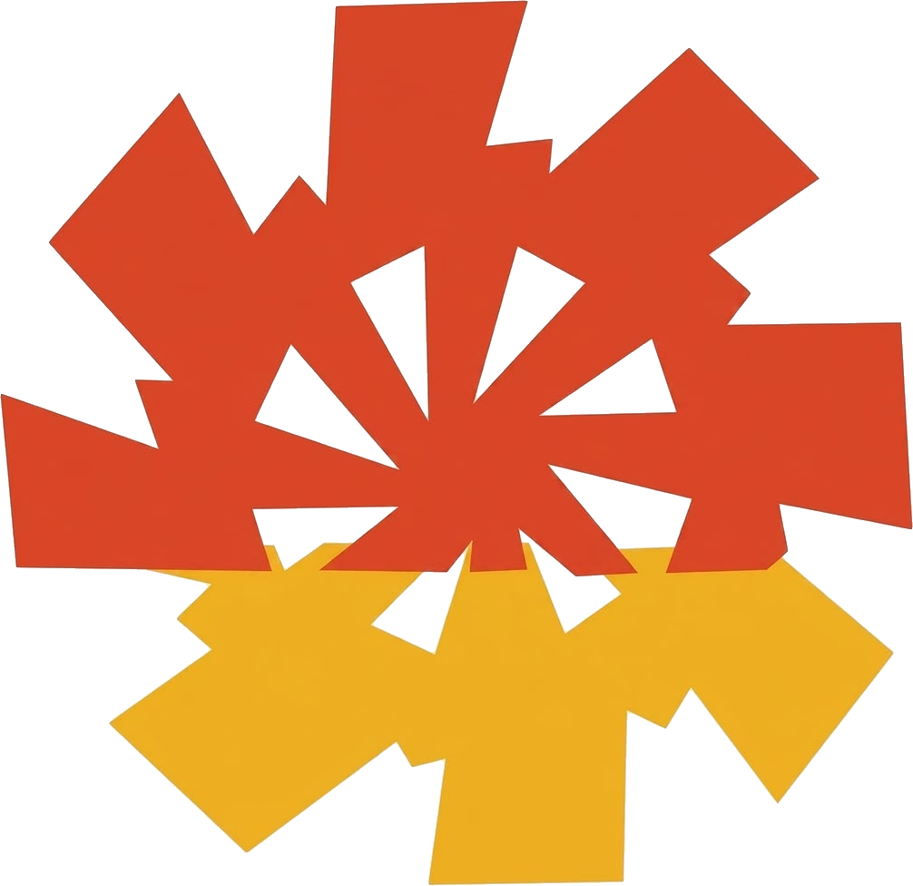

Powering Infrastructure Since 1995
Class I Licensed Electrical Contractors delivering HT & LT electrical infrastructure across Bengaluru for over three decades.
Three decades of external electrical infrastructure.
Powertek is a Class I Licensed Electrical Contractor based in Bangalore, established in 1995. We execute complete external electrical infrastructure — from 11 kV incoming and RMU installation through transformers, LT panels, underground cabling and DG sets, to final testing and commissioning.
Our teams handle labour, liaison and BESCOM coordination in-house, which means a single accountable contractor from drawing approval to energisation.
To deliver electrical infrastructure that is energised on schedule, inspected without exception, and built to run for decades without intervention.
To be the electrical contractor that Bengaluru's largest developers and hospitals call first for HT and LT works.
Eight reasons developers hand us their projects.
Complete external electrical infrastructure.
TO EXPAND SCOPE
High-tension works from the incoming 11 kV point: ring main units, VCB panels, metering cubicles, HT underground cable laying, pothead and end terminations, and transformer installation with all statutory approvals.
Low-tension distribution downstream of the transformer: LT main and kiosk panels, metering and distribution boards, feeder pillars, busbar sizing, underground LT cabling and earthing systems.
Full electrification for apartment developments — external substation works, DG backup and synchronising panels, common-area distribution, and individual flat metering coordinated with BESCOM.
Villa and plotted-layout networks: HT ring distribution, multiple transformer locations, feeder pillars, street lighting, and individual villa metering with master metering at the incoming point.
Shopping complexes, offices and data centres — higher fault levels, VCB panels, common-area and tenant metering, and DG capacity sized for continuous commercial load.
Zero-tolerance environments: AMF panels with automatic changeover, DG sets and exhaust stacks, voltage stabilisers, dedicated earthing, and floor-wise distribution for theatre and ICU loads.
Pre-energisation testing and documentation — HT cable pressure and IR tests, transformer oil and ratio tests, relay settings, earth resistance readings, and inspection sign-off records.
Drawing approvals, sanctioned-load applications, inspectorate clearance and BESCOM coordination through to meter installation — handled by our own liaison team, not sub-contracted.
Recent completed projects
BENGALURU
{{ p.name }}
Send us the drawings. We will send back a schedule.
85/2, 5th Cross, Maruthi Nagar,
Madiwala, Bengaluru — 560068
{{ m.name }}
{{ m.description }}
- {{ s.n }} {{ s.text }}